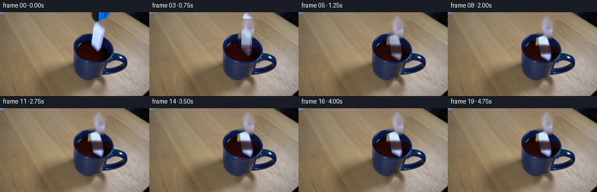
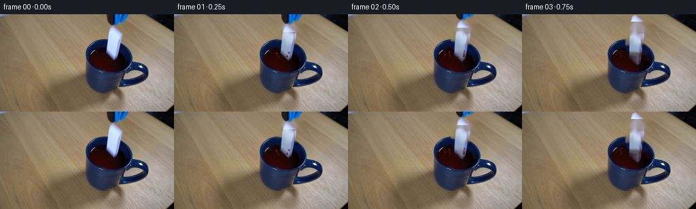
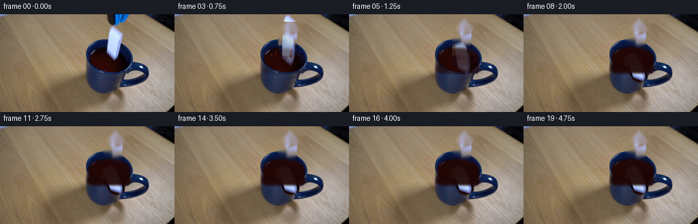

CODING AGENTS AS PIXEL WORLD MODELS
traex/DeepSeek-V4.1-Flash · 0046
点击播放 · 原生 RGB 像素
此结果可播放，但该运行尚未通过最终提交审核。页面展示不代表评测通过。
逐轮保存的候选
回放视频、检查图与代码变化。
每份候选均可单独播放。实际图片检查记录在下方工具轨迹中。
候选 01播放与检查图
点击播放 · 原生 RGB 像素


展开代码变化
--- 上一保存版本
+++ 本次保存版本
@@ -0,0 +1,311 @@
+from pathlib import Path
+
+import cv2
+import numpy as np
+from PIL import Image, ImageDraw, ImageFilter
+
+import artifact_io
+
+
+ROOT = Path(__file__).resolve().parent
+WIDTH, HEIGHT = 256, 144
+FRAME_COUNT = 20
+FPS = 4
+SCALE = 4
+
+
+def polygon_mask(size, points, blur=0.0):
+ """Antialiased mask made at four times the output resolution."""
+ width, height = size
+ mask = Image.new("L", (width * SCALE, height * SCALE), 0)
+ draw = ImageDraw.Draw(mask)
+ draw.polygon([(int(x * SCALE), int(y * SCALE)) for x, y in points], fill=255)
+ mask = mask.resize((width, height), Image.Resampling.LANCZOS)
+ if blur:
+ mask = mask.filter(ImageFilter.GaussianBlur(blur))
+ return np.asarray(mask)
+
+
+def ellipse_mask(size, center, axes, blur=0.0):
+ width, height = size
+ mask = Image.new("L", (width * SCALE, height * SCALE), 0)
+ draw = ImageDraw.Draw(mask)
+ cx, cy = center
+ rx, ry = axes
+ draw.ellipse(
+ (
+ int((cx - rx) * SCALE),
+ int((cy - ry) * SCALE),
+ int((cx + rx) * SCALE),
+ int((cy + ry) * SCALE),
+ ),
+ fill=255,
+ )
+ mask = mask.resize((width, height), Image.Resampling.LANCZOS)
+ if blur:
+ mask = mask.filter(ImageFilter.GaussianBlur(blur))
+ return np.asarray(mask)
+
+
+def extract_domino(image):
+ crop_box = (149, 18, 182, 72)
+ points = [
+ (157.5, 23.0),
+ (172.0, 22.5),
+ (175.5, 28.5),
+ (177.2, 57.5),
+ (175.0, 65.5),
+ (168.7, 68.2),
+ (160.0, 66.0),
+ (154.5, 60.0),
+ (153.0, 34.0),
+ ]
+ global_mask = polygon_mask((WIDTH, HEIGHT), points, blur=0.35)
+ x0, y0, x1, y1 = crop_box
+ rgba = np.dstack([image[y0:y1, x0:x1], global_mask[y0:y1, x0:x1]]).astype(np.uint8)
+ return Image.fromarray(rgba, "RGBA"), crop_box
+
+
+def extract_gripper(image):
+ x0, y0, x1, y1 = 148, 0, 192, 28
+ crop = image[y0:y1, x0:x1].astype(np.int16)
+ red, green, blue = crop[:, :, 0], crop[:, :, 1], crop[:, :, 2]
+ blue_metal = (blue > red + 16) & (blue > green + 4) & (blue > 28)
+ dark_metal = (red + green + blue) < 155
+ alpha = ((blue_metal | dark_metal).astype(np.uint8) * 255)
+ alpha = cv2.dilate(alpha, np.ones((2, 2), np.uint8), iterations=1)
+ alpha = cv2.GaussianBlur(alpha, (3, 3), 0.55)
+ rgba = np.dstack([crop.astype(np.uint8), alpha]).astype(np.uint8)
+ return Image.fromarray(rgba, "RGBA"), (x0, y0)
+
+
+def make_clean_plate(image):
+ height, width = image.shape[:2]
+
+ domino_points = [
+ (157, 22),
+ (172, 22),
+ (176, 28),
+ (178, 58),
+ (175, 67),
+ (168, 70),
+ (159, 67),
+ (153, 60),
+ (152, 34),
+ ]
+ domino_mask = polygon_mask((width, height), domino_points)
+ domino_mask = cv2.dilate((domino_mask > 32).astype(np.uint8) * 255, np.ones((3, 3), np.uint8))
+
+ grabber_mask = np.zeros((height, width), np.uint8)
+ grabber_mask[0:27, 149:191] = 255
+
+ plate = cv2.inpaint(image[:, :, ::-1], domino_mask, 3, cv2.INPAINT_TELEA)[:, :, ::-1]
+ plate = cv2.inpaint(plate[:, :, ::-1], grabber_mask, 4, cv2.INPAINT_TELEA)[:, :, ::-1]
+
+ # Softening the repaired drink suppresses the directional streaks left by
+ # inpainting while preserving the photographed rim and cup body.
+ liquid_repair = domino_mask.copy()
+ liquid_repair[:37] = 0
+ soft = cv2.GaussianBlur(plate, (0, 0), 1.8)
+ alpha = cv2.GaussianBlur(liquid_repair, (0, 0), 1.2).astype(np.float32)[:, :, None] / 255.0
+ plate = plate.astype(np.float32) * (1.0 - 0.72 * alpha) + soft.astype(np.float32) * (0.72 * alpha)
+
+ yy, xx = np.mgrid[0:height, 0:width]
+ drink_mask = ellipse_mask((width, height), (160, 61), (32, 18), blur=2.0).astype(np.float32) / 255.0
+ drink_mask *= (yy >= 42) & (yy <= 80)
+ sheen = 5.0 * np.exp(-((xx - 148) ** 2 / 250.0 + (yy - 50) ** 2 / 170.0))
+ tint = np.dstack([sheen * 0.42, sheen * 0.13, sheen * 0.10])
+ plate += tint * drink_mask[:, :, None]
+
+ return np.clip(plate, 0, 255).astype(np.uint8)
+
+
+def paste_rgba(base, sprite, position, opacity=1.0):
+ if opacity <= 0:
+ return base
+ if opacity < 1.0:
+ alpha = np.asarray(sprite.getchannel("A"), dtype=np.float32) * opacity
+ sprite = sprite.copy()
+ sprite.putalpha(Image.fromarray(np.clip(alpha, 0, 255).astype(np.uint8), "L"))
+ layer = Image.new("RGBA", base.size, (0, 0, 0, 0))
+ layer.alpha_composite(sprite, (int(round(position[0])), int(round(position[1]))))
+ return Image.alpha_composite(base.convert("RGBA"), layer).convert("RGB")
+
+
+def render_domino(base, sprite, crop_box, dy, angle, motion_blur=0.0):
+ x0, y0, x1, y1 = crop_box
+ center = ((x0 + x1 - 1) * 0.5, (y0 + y1 - 1) * 0.5 + dy)
+ rotated = sprite.rotate(angle, resample=Image.Resampling.BICUBIC, expand=True)
+
+ if motion_blur > 0.1:
+ offsets = [-motion_blur, -motion_blur * 0.52, 0.0]
+ weights = [0.18, 0.28, 0.54]
+ else:
+ offsets = [0.0]
+ weights = [1.0]
+
+ for offset, weight in zip(offsets, weights):
+ pos = (center[0] - rotated.width / 2, center[1] - rotated.height / 2 + offset)
+ base = paste_rgba(base, rotated, pos, opacity=weight)
+ return base
+
+
+def draw_liquid(base, frame_index, impact):
+ """Apply occlusion and draw expanding rings on the drink's surface."""
+ arr = np.asarray(base).copy()
+ height, width = arr.shape[:2]
+
+ surface = ellipse_mask((width, height), (160, 64), (32, 8), blur=1.4)
+ submerged = np.clip((impact - 0.8) / 12.0, 0.0, 1.0)
+ if submerged > 0:
+ alpha = surface.astype(np.float32) / 255.0 * (0.74 * submerged)
+ liquid_color = np.array([31.0, 6.0, 5.0], dtype=np.float32)
+ arr = arr.astype(np.float32) * (1.0 - alpha[:, :, None]) + liquid_color * alpha[:, :, None]
+
+ # A low glassy highlight traces the back edge of the liquid.
+ high = ellipse_mask((width, height), (158, 57.5), (29, 7), blur=1.0).astype(np.float32) / 255.0
+ lower = ellipse_mask((width, height), (160, 61), (30, 8), blur=1.0).astype(np.float32) / 255.0
+ edge = np.clip(high - lower, 0, 1) * 0.18
+ arr = arr.astype(np.float32) + edge[:, :, None] * np.array([40.0, 11.0, 8.0])
+
+ frame = Image.fromarray(np.clip(arr, 0, 255).astype(np.uint8), "RGB")
+ overlay = Image.new("RGBA", (width * SCALE, height * SCALE), (0, 0, 0, 0))
+ draw = ImageDraw.Draw(overlay)
+
+ for age in range(0, 7):
+ start = 2
+ if frame_index >= start + age:
+ radius = 3.5 + 5.1 * age
+ strength = max(0.0, 1.0 - age / 7.0)
+ rx = radius
+ ry = 1.3 + radius * 0.19
+ for inset, color, width_factor in [
+ (0.0, (99, 29, 20, int(105 * strength)), 2.2),
+ (0.75, (21, 3, 4, int(105 * strength)), 1.5),
+ ]:
+ box = (
+ int((160 - rx + inset) * SCALE),
+ int((64 - ry + inset * 0.35) * SCALE),
+ int((160 + rx - inset) * SCALE),
+ int((64 + ry - inset * 0.35) * SCALE),
+ )
+ draw.ellipse(box, outline=color, width=max(1, int(width_factor * SCALE)))
+
+ # Impact crown and droplets fade rapidly, leaving the ceramic tile in the
+ # settled frames.
+ if 1 <= frame_index <= 5:
+ phase = frame_index - 1
+ splash_alpha = int([210, 180, 130, 78, 36][phase])
+ crown_h = [3, 7, 10, 8, 4][phase]
+ spread = [6, 10, 14, 17, 19][phase]
+ for side in (-1, 1):
+ x = 160 + side * spread
+ y = 63
+ points = [
+ ((x - 1.3) * SCALE, y * SCALE),
+ ((x + side * 0.8) * SCALE, (y - crown_h) * SCALE),
+ ((x + 2.1) * SCALE, y * SCALE),
+ ]
+ draw.polygon(points, fill=(62, 10, 7, splash_alpha))
+ draw.line(
+ [(x * SCALE, y * SCALE), ((x + side * 1.6) * SCALE, (y - crown_h * 0.72) * SCALE)],
+ fill=(133, 39, 27, min(220, splash_alpha + 25)),
+ width=2,
+ )
+
+ droplets = [
+ (151, 58, -2.0, -2.4),
+ (169, 57, 2.2, -2.8),
+ (146, 61, -3.4, -1.2),
+ (174, 60, 3.0, -1.4),
+ (156, 55, -1.1, -3.6),
+ (165, 54, 1.3, -3.2),
+ ]
+ for idx, (x, y, vx, vy) in enumerate(droplets):
+ if idx > phase + 1:
+ continue
+ px = x + vx * phase
+ py = y + vy * phase + 0.34 * phase * phase
+ radius = max(0.55, 1.35 - phase * 0.12)
+ box = (
+ int((px - radius) * SCALE),
+ int((py - radius) * SCALE),
+ int((px + radius) * SCALE),
+ int((py + radius) * SCALE),
+ )
+ draw.ellipse(box, fill=(111, 31, 23, max(45, splash_alpha - 25)))
+ draw.ellipse(
+ (
+ box[0],
+ box[1],
+ box[0] + max(1, int(radius * SCALE * 0.55)),
+ box[1] + max(1, int(radius * SCALE * 0.55)),
+ ),
+ fill=(181, 78, 56, max(35, splash_alpha - 60)),
+ )
+
+ overlay = overlay.resize((width, height), Image.Resampling.LANCZOS)
+ return Image.alpha_composite(frame.convert("RGBA"), overlay).convert("RGB")
+
+
+def build_frames():
+ source = np.asarray(Image.open(ROOT / "first_frame.png").convert("RGB"), dtype=np.uint8)
+ plate = make_clean_plate(source)
+ domino, domino_box = extract_domino(source)
+ gripper, gripper_anchor = extract_gripper(source)
+
+ drop = [0.0, 1.0, 4.0, 9.0, 15.0, 17.8, 18.7, 18.9, 18.4, 18.7, 18.9, 18.8, 18.9, 18.9, 18.9, 18.9, 18.9, 18.9, 18.9, 18.9]
+ angles = [0.0, 0.8, 2.7, 6.1, 10.5, 14.0, 15.8, 16.4, 15.9, 16.2, 16.3, 16.2, 16.3, 16.3, 16.3, 16.3, 16.3, 16.3, 16.3, 16.3]
+ blur = [0.0, 0.8, 2.5, 4.5, 5.5, 3.0, 0.0, 0.0, 0.0, 0.0, 0.0, 0.0, 0.0, 0.0, 0.0, 0.0, 0.0, 0.0, 0.0, 0.0]
+
+ frames = []
+ for index in range(FRAME_COUNT):
+ if index == 0:
+ frames.append(source.copy())
+ continue
+
+ frame = Image.fromarray(plate, "RGB")
+ frame = render_domino(
+ frame,
+ domino,
+ domino_box,
+ drop[index],
+ angles[index],
+ motion_blur=blur[index],
+ )
+ frame = draw_liquid(frame, index, drop[index])
+
+ gripper_lift = [0.0, 2.5, 8.0, 17.0, 29.0][min(index, 4)]
+ if index <= 4:
+ frame = paste_rgba(
+ frame,
+ gripper,
+ (gripper_anchor[0], gripper_anchor[1] - gripper_lift),
+ opacity=max(0.0, 1.0 - max(0, index - 3) * 0.55),
+ )
+ frames.append(np.asarray(frame, dtype=np.uint8))
+
+ return np.stack(frames, axis=0)
+
+
+def main():
+ frames = build_frames()
+ artifact_io.save(frames, ROOT)
+
+ try:
+ writer = cv2.VideoWriter(
+ str(ROOT / "video.mp4"),
+ cv2.VideoWriter_fourcc(*"mp4v"),
+ FPS,
+ (WIDTH, HEIGHT),
+ )
+ if writer.isOpened():
+ for frame in frames:
+ writer.write(frame[:, :, ::-1])
+ writer.release()
+ except cv2.error:
+ pass
+
+
+if __name__ == "__main__":
+ main()
候选 02播放与检查图
点击播放 · 原生 RGB 像素

展开代码变化
--- 上一保存版本
+++ 本次保存版本
@@ -155,12 +155,28 @@
arr = np.asarray(base).copy()
height, width = arr.shape[:2]
- surface = ellipse_mask((width, height), (160, 64), (32, 8), blur=1.4)
- submerged = np.clip((impact - 0.8) / 12.0, 0.0, 1.0)
+ surface = ellipse_mask((width, height), (160, 63), (31, 12), blur=1.2)
+ cup_interior = ellipse_mask((width, height), (160, 64), (31, 15), blur=1.5)
+ cup_interior = np.maximum(
+ cup_interior,
+ polygon_mask(
+ (width, height),
+ [(131, 64), (189, 64), (193, 82), (187, 87), (133, 87), (127, 82)],
+ blur=1.5,
+ ),
+ )
+ submerged = np.clip((impact - 2.0) / 29.0, 0.0, 1.0)
if submerged > 0:
- alpha = surface.astype(np.float32) / 255.0 * (0.74 * submerged)
+ alpha = cup_interior.astype(np.float32) / 255.0 * (0.94 * submerged)
liquid_color = np.array([31.0, 6.0, 5.0], dtype=np.float32)
arr = arr.astype(np.float32) * (1.0 - alpha[:, :, None]) + liquid_color * alpha[:, :, None]
+
+ # The visible surface darkens the tile a little even before full body
+ # occlusion, which sells the transition through the meniscus.
+ surface_alpha = surface.astype(np.float32) / 255.0 * (0.24 * min(1.0, impact / 15.0))
+ arr = arr.astype(np.float32) * (1.0 - surface_alpha[:, :, None]) + np.array(
+ [38.0, 7.0, 5.0], dtype=np.float32
+ ) * surface_alpha[:, :, None]
# A low glassy highlight traces the back edge of the liquid.
high = ellipse_mask((width, height), (158, 57.5), (29, 7), blur=1.0).astype(np.float32) / 255.0
@@ -172,11 +188,11 @@
overlay = Image.new("RGBA", (width * SCALE, height * SCALE), (0, 0, 0, 0))
draw = ImageDraw.Draw(overlay)
- for age in range(0, 7):
- start = 2
- if frame_index >= start + age:
- radius = 3.5 + 5.1 * age
- strength = max(0.0, 1.0 - age / 7.0)
+ for birth, life, growth in [(2, 9, 2.9), (5, 7, 3.2), (9, 6, 3.5)]:
+ age = frame_index - birth
+ if 0 <= age < life:
+ radius = 3.5 + growth * age
+ strength = max(0.0, 1.0 - age / life)
rx = radius
ry = 1.3 + radius * 0.19
for inset, color, width_factor in [
@@ -193,8 +209,8 @@
# Impact crown and droplets fade rapidly, leaving the ceramic tile in the
# settled frames.
- if 1 <= frame_index <= 5:
- phase = frame_index - 1
+ if 2 <= frame_index <= 6:
+ phase = frame_index - 2
splash_alpha = int([210, 180, 130, 78, 36][phase])
crown_h = [3, 7, 10, 8, 4][phase]
spread = [6, 10, 14, 17, 19][phase]
@@ -254,9 +270,9 @@
domino, domino_box = extract_domino(source)
gripper, gripper_anchor = extract_gripper(source)
- drop = [0.0, 1.0, 4.0, 9.0, 15.0, 17.8, 18.7, 18.9, 18.4, 18.7, 18.9, 18.8, 18.9, 18.9, 18.9, 18.9, 18.9, 18.9, 18.9, 18.9]
- angles = [0.0, 0.8, 2.7, 6.1, 10.5, 14.0, 15.8, 16.4, 15.9, 16.2, 16.3, 16.2, 16.3, 16.3, 16.3, 16.3, 16.3, 16.3, 16.3, 16.3]
- blur = [0.0, 0.8, 2.5, 4.5, 5.5, 3.0, 0.0, 0.0, 0.0, 0.0, 0.0, 0.0, 0.0, 0.0, 0.0, 0.0, 0.0, 0.0, 0.0, 0.0]
+ drop = [0.0, 1.0, 4.0, 9.0, 15.0, 22.0, 28.0, 32.0, 34.5, 35.5, 35.9, 35.7, 35.8, 35.8, 35.8, 35.8, 35.8, 35.8, 35.8, 35.8]
+ angles = [0.0, 0.8, 2.7, 6.1, 10.5, 15.0, 19.2, 22.8, 25.4, 26.3, 26.5, 26.4, 26.5, 26.5, 26.5, 26.5, 26.5, 26.5, 26.5, 26.5]
+ blur = [0.0, 0.8, 2.5, 4.5, 5.5, 4.0, 1.5, 0.0, 0.0, 0.0, 0.0, 0.0, 0.0, 0.0, 0.0, 0.0, 0.0, 0.0, 0.0, 0.0]
frames = []
for index in range(FRAME_COUNT):
可观测工具轨迹
实际执行的命令与返回图片。
命令 1exit 0
/bin/bash -c "pwd && rg --files -g '"'!*.png'"' -g '"'!*.mp4'"' -g '"'!*.webm'"' -g '"'!*.mov'"' | sort"
命令 2exit 0
/bin/bash -c "sed -n '1,240p' prompt.txt"
命令 3exit 0
/bin/bash -c "sed -n '1,280p' GENERATION_RULES.md"
命令 4exit 0
/bin/bash -c "find . -maxdepth 2 -type f -printf '%p %s bytes\\n' | sort | head -200"
命令 5exit 0
/bin/bash -c "python - <<'PY'
from PIL import Image
im=Image.open('first_frame.png')
print(im.mode, im.size)
PY"命令 6exit 0
/bin/bash -c "sed -n '1,260p' artifact_io.py && sed -n '1,240p' player_template.html"
命令 7exit 0
/bin/bash -c "python - <<'PY'
import cv2, numpy as np
im=cv2.imread('first_frame.png')
# print selected colors/coords
for x,y in [(160,60),(160,80),(160,90),(160,100),(145,70),(135,50),(168,10),(170,25),(170,40),(150,50),(155,50),(165,50),(175,50),(180,50),(180,35)]:
print((x,y), im[y,x][::-1])
# ranges where blue-dominant pixels
b,g,r=cv2.split(im)
mask=(b.astype(int)>r.astype(int)+30)&(b.astype(int)>g.astype(int)+20)&(b>70)
ys,xs=np.where(mask)
print('blue bbox',xs.min(),ys.min(),xs.max(),ys.max())
PY"命令 8exit 0
/bin/bash -c "python - <<'PY'
from PIL import Image
im=Image.open('first_frame.png')
im.crop((115,0,215,120)).resize((600,720), Image.Resampling.NEAREST).save('.tmp/crop.png')
PY"命令 9exit 0
/bin/bash -c "python - <<'PY'
from PIL import Image,ImageDraw,ImageFont
im=Image.open('first_frame.png').resize((1024,576), Image.Resampling.NEAREST)
d=ImageDraw.Draw(im)
for x in range(0,257,10):
X=x*4; d.line((X,0,X,576),fill=(255,255,0),width=1)
if x%20==0: d.text((X+2,2),str(x),fill=(255,255,0))
for y in range(0,145,10):
Y=y*4; d.line((0,Y,1024,Y),fill=(255,255,0),width=1)
if y%20==0: d.text((2,Y+2),str(y),fill=(255,255,0))
im.save('.tmp/grid.png')
PY"命令 10exit 0
/bin/bash -c "python - <<'PY'
import cv2, numpy as np
im=cv2.imread('first_frame.png')
mask=np.zeros(im.shape[:2],np.uint8)
# object shape plus slight margin, handcrafted polygon
pts=np.array([[150,0],[190,0],[190,29],[186,36],[183,78],[180,84],[176,88],[161,86],[154,80],[153,35],[149,29]],np.int32)
cv2.fillPoly(mask,[pts],255)
out=cv2.inpaint(im,mask,4,cv2.INPAINT_TELEA)
cv2.imwrite('.tmp/clean_inpaint.png',out)
# also ns
out2=cv2.inpaint(im,mask,4,cv2.INPAINT_NS)
cv2.imwrite('.tmp/clean_ns.png',out2)
# side by side scaled
cv2.imwrite('.tmp/clean_compare.png',np.hstack([cv2.resize(out,(512,288),interpolation=cv2.INTER_NEAREST),cv2.resize(out2,(512,288),interpolation=cv2.INTER_NEAREST)]))
PY"命令 11exit 0
/bin/bash -c "python - <<'PY'
from PIL import Image
im=Image.open('.tmp/clean_inpaint.png')
im.crop((118,48,194,96)).resize((760,480), Image.Resampling.NEAREST).save('.tmp/clean_crop.png')
PY"命令 12exit 0
/bin/bash -c "python - <<'PY'
import cv2, numpy as np
im=cv2.imread('first_frame.png')
h,w=im.shape[:2]
mask=np.zeros((h,w),np.uint8)
pts=np.array([[149,0],[190,0],[190,30],[186,37],[183,77],[181,84],[175,88],[160,87],[153,82],[152,35]],np.int32)
cv2.fillPoly(mask,[pts],255)
out=im.copy()
cx=160
for y in range(h):
for x in range(w):
if mask[y,x]:
mx=2*cx-x
if 0<=mx<w:
out[y,x]=im[y,mx]
# small feathered inpainting only for center pixels where mirror not sensible? no
cv2.imwrite('.tmp/clean_mirror.png',out)
cv2.imwrite('.tmp/mirror_crop.png',cv2.resize(out[0:120,115:215],(600,720),interpolation=cv2.INTER_NEAREST))
PY"命令 13exit 0
/bin/bash -c "python - <<'PY'
from PIL import Image
im=Image.open('first_frame.png')
# print RGB grid relevant coords
for y in [50,52,54,56,58,60,62,64,66,68,70,72,74,76,78,80,82]:
print('y',y)
for x in [125,128,132,136,140,144,148,152,156,160,164,168,172,176,180,184,188,192,196]:
print(x, '%02x%02x%02x'%im.getpixel((x,y)), end=' ')
print()
PY"命令 14exit 0
/bin/bash -c "python - <<'PY'
from PIL import Image, ImageEnhance
im=Image.open('first_frame.png')
im.crop((130,0,200,100)).resize((700,1000), Image.Resampling.NEAREST).save('.tmp/object_crop.png')
ImageEnhance.Contrast(im.crop((120,30,200,100))).enhance(1.8).resize((800,700), Image.Resampling.NEAREST).save('.tmp/contrast_crop.png')
PY"命令 15exit 0
/bin/bash -c "python - <<'PY'
import cv2,numpy as np
im=cv2.imread('first_frame.png')
h,w=im.shape[:2]
for name,pts in {
'a':[(158,23),(171,24),(175,31),(178,72),(174,80),(165,83),(154,80),(152,34)],
'b':[(155,24),(172,24),(176,30),(179,74),(174,82),(163,84),(153,80),(151,34)],
}.items():
mask=np.zeros((h,w),np.uint8); cv2.fillPoly(mask,[np.array(pts,np.int32)],255)
for typ,flag in [('telea',cv2.INPAINT_TELEA),('ns',cv2.INPAINT_NS)]:
out=cv2.inpaint(im,mask,3,flag)
cv2.imwrite(f'.tmp/plate_{name}_{typ}.png',out)
cv2.imwrite(f'.tmp/plate_{name}_{typ}_crop.png',cv2.resize(out[15:95,120:200],(640,640),interpolation=cv2.INTER_NEAREST))
PY"命令 16exit 1
/bin/bash -c "python - <<'PY'
import cv2, numpy as np
im=cv2.imread('first_frame.png').astype(np.float32)
h,w=im.shape[:2]
mask=np.zeros((h,w),np.uint8)
body=np.array([[153,20],[173,20],[178,28],[180,77],[176,83],[162,84],[152,78],[151,30]],np.int32)
tool=np.array([[150,0],[188,0],[188,23],[150,23]],np.int32)
cv2.fillPoly(mask,[body],255); cv2.fillPoly(mask,[tool],255)
# remove too much at lower area? okay
base=np.zeros_like(im)
for y in range(h):
xs=np.where(mask[y]>0)[0]
if len(xs)==0:
base[y]=im[y]; continue
# runs
bounds=np.r_[0,np.flatnonzero(np.diff(xs)>1)+1,len(xs)]
for s,e in zip(bounds[:-1],bounds[1:]):
a=xs[s]; b=xs[e-1]
l=np.median(im[y,max(0,a-3):a],axis=0) if a>0 else im[y,b+1]
r=np.median(im[y,b+1:min(w,b+4)],axis=0) if b+1<w else im[y,a-1]
t=np.linspace(0,1,b-a+1)[:,None]
base[y,a:b+1]=l*(1-t)+r*t
# copy nonmask from original
out=im.copy(); out[mask>0]=base[mask>0]
# add deterministic texture with low freq
rng=np.random.default_rng(4)
noise=rng.normal(0,1,(h,w,1))
noise=cv2.GaussianBlur(noise,(3,3),0)
# stronger texture near table; subtle in cup
tex=np.repeat(noise,3,axis=2)*np.array([2.0,2.0,2.0],np.float32)
out[mask>0]+=tex[mask>0]
out=np.clip(out,0,255).astype(np.uint8)
cv2.imwrite('.tmp/clean_horiz.png',out)
cv2.imwrite('.tmp/clean_horiz_crop.png',cv2.resize(out[0:110,115:210],(760,880),interpolation=cv2.INTER_NEAREST))
# also use masked inpaint starting from this as init? cv2 doesn't support init
PY"命令 17exit 0
/bin/bash -c "python - <<'PY'
import cv2, numpy as np
im=cv2.imread('first_frame.png').astype(np.float32)
h,w=im.shape[:2]
mask=np.zeros((h,w),np.uint8)
body=np.array([[153,20],[173,20],[178,28],[180,77],[176,83],[162,84],[152,78],[151,30]],np.int32)
tool=np.array([[150,0],[188,0],[188,23],[150,23]],np.int32)
cv2.fillPoly(mask,[body],255); cv2.fillPoly(mask,[tool],255)
base=np.zeros_like(im)
for y in range(h):
xs=np.where(mask[y]>0)[0]
if len(xs)==0:
base[y]=im[y]; continue
bounds=np.r_[0,np.flatnonzero(np.diff(xs)>1)+1,len(xs)]
for s,e in zip(bounds[:-1],bounds[1:]):
a=xs[s]; b=xs[e-1]
l=np.median(im[y,max(0,a-3):a],axis=0) if a>0 else im[y,b+1]
r=np.median(im[y,b+1:min(w,b+4)],axis=0) if b+1<w else im[y,a-1]
t=np.linspace(0,1,b-a+1)[:,None]
base[y,a:b+1]=l*(1-t)+r*t
out=im.copy(); out[mask>0]=base[mask>0]
rng=np.random.default_rng(4)
noise=cv2.GaussianBlur(rng.normal(0,1,(h,w)),(3,3),0)
tex=np.repeat(noise[:,:,None],3,axis=2)*2.0
out[mask>0]+=tex[mask>0]
out=np.clip(out,0,255).astype(np.uint8)
cv2.imwrite('.tmp/clean_horiz.png',out)
cv2.imwrite('.tmp/clean_horiz_crop.png',cv2.resize(out[0:110,115:210],(760,880),interpolation=cv2.INTER_NEAREST))
PY"命令 18exit 0
/bin/bash -c "python - <<'PY'
from PIL import Image
im=Image.open('first_frame.png')
# list rough foreground segmentation using brightness/saturation relative local background for each row
import numpy as np
a=np.array(im)
for y in range(0,90,2):
# tile object likely x 145..185; print brightness max
xs=range(145,188)
vals=[int(a[y,x].mean()) for x in xs]
# print chars thresholds
print(f'{y:02d}', ''.join(' .:-=+*#%@'[min(9,v//26)] for v in vals), max(vals))
PY"命令 19exit 0
/bin/bash -c "python - <<'PY'
import cv2,numpy as np
im=cv2.imread('first_frame.png')
mask=np.zeros(im.shape[:2],np.uint8)
pts=np.array([[158,22],[172,22],[176,28],[178,61],[176,70],[168,74],[158,72],[152,61],[153,34]],np.int32)
cv2.fillPoly(mask,[pts],255)
out=cv2.inpaint(im,mask,4,cv2.INPAINT_NS)
cv2.imwrite('.tmp/plate_tight.png',out)
cv2.imwrite('.tmp/plate_tight_crop.png',cv2.resize(out[15:90,120:200],(640,600),interpolation=cv2.INTER_NEAREST))
# save mask visual
v=im.copy(); v[mask>0]=(0,0,255); cv2.imwrite('.tmp/maskvis.png',v)
PY"命令 20exit 0
/bin/bash -c "python - <<'PY'
import cv2, numpy as np
im=cv2.imread('first_frame.png')
h,w=im.shape[:2]
mask=np.zeros((h,w),np.uint8)
pts=np.array([[158,22],[172,22],[176,28],[178,61],[176,70],[168,74],[158,72],[152,61],[153,34]],np.int32)
cv2.fillPoly(mask,[pts],255)
# use row-wise nearest exterior blending, then blur only within cup upper interior region for smoothness
base=im.astype(np.float32).copy()
for y in range(h):
xs=np.where(mask[y]>0)[0]
if len(xs)==0: continue
bounds=np.r_[0,np.flatnonzero(np.diff(xs)>1)+1,len(xs)]
for s,e in zip(bounds[:-1],bounds[1:]):
a=xs[s]; b=xs[e-1]
l=np.median(im[y,max(0,a-4):a],axis=0) if a>=4 else im[y,b+1]
r=np.median(im[y,b+1:min(w,b+5)],axis=0) if b+1<w else im[y,a-1]
# for upper region use midpoint-ish; lower use vertical continuation? interpolate
t=np.linspace(0,1,b-a+1)[:,None]
base[y,a:b+1]=l*(1-t)+r*t
# add texture extracted from outside per y? deterministic low noise
rng=np.random.default_rng(12)
noise=cv2.GaussianBlur(rng.normal(0,1,(h,w)),(3,3),0)
tex=np.repeat(noise[:,:,None],3,axis=2)*1.2
base[mask>0]+=tex[mask>0]
out=np.clip(base,0,255).astype(np.uint8)
# smooth mask region with original blurred heavily? maybe preserve edges outside
blur=cv2.GaussianBlur(out,(5,5),0)
# fill cup interior should not have sharp edges; but edge pixels need inpaint already
out[mask>0]=blur[mask>0]
cv2.imwrite('.tmp/plate_clean.png',out)
cv2.imwrite('.tmp/plate_clean_crop.png',cv2.resize(out[15:90,120:200],(640,600),interpolation=cv2.INTER_NEAREST))
PY"命令 21exit 0
/bin/bash -c "python - <<'PY'
from PIL import Image
im=Image.open('.tmp/plate_clean.png')
im.resize((1024,576),Image.Resampling.NEAREST).save('.tmp/plate_clean_big.png')
PY"命令 22exit 0
/bin/bash -c "python - <<'PY'
import cv2,numpy as np
im=cv2.imread('first_frame.png')
g=cv2.cvtColor(im,cv2.COLOR_BGR2GRAY).astype(float)
# print cup boundary positions based on brightness at rows
for y in range(35,86,3):
# interior dark red vs table/cup blue; print run x where avg<60 and x 120..195
xs=[x for x in range(115,201) if g[y,x]<55]
if xs: print(y,min(xs),max(xs))
PY"命令 23exit 0
/bin/bash -c "python - <<'PY'
import cv2,numpy as np
im=cv2.imread('first_frame.png')
g=cv2.cvtColor(im,cv2.COLOR_BGR2GRAY).astype(float)
for y in range(38,80,2):
vals=[int(g[y,x]) for x in range(122,198,2)]
print(f'{y:02d}', ''.join(' .:-=+*#%@'[min(9,v//26)] for v in vals))
PY"命令 24exit 0
/bin/bash -c "python - <<'PY'
from PIL import Image
im=Image.open('first_frame.png')
im.crop((105,20,225,125)).resize((960,840), Image.Resampling.NEAREST).save('.tmp/mug_crop.png')
PY"命令 25exit 0
/bin/bash -c "python - <<'PY'
import cv2,numpy as np
im=cv2.imread('first_frame.png')
g=cv2.cvtColor(im,cv2.COLOR_BGR2GRAY)
# table texture baseline by sampling same row x 195..215 and use random patches from rows above, but in cup dark rim use interpolation
h,w=im.shape[:2]
mask=np.zeros((h,w),np.uint8)
body=np.array([[158,22],[172,22],[176,28],[178,60],[175,70],[167,74],[157,72],[151,60],[153,34]],np.int32)
tool=np.array([[150,0],[188,0],[188,22],[150,22]],np.int32)
cv2.fillPoly(mask,[body],255); cv2.fillPoly(mask,[tool],255)
# patch table using source blocks above each pixel shifted x by 50, preserving texture
base=im.copy()
for y in range(0,55):
for x in range(145,190):
if mask[y,x]:
sy=max(0,y-8); sx=x+28
if sx<w:
base[y,x]=im[sy,sx]
# For cup dark regions do smooth interpolation by row, but actual cup rim needs preserved dark
# simpler: use patch for y<52, dark smooth for >=52
for y in range(52,85):
xs=np.where(mask[y]>0)[0]
if len(xs)==0: continue
a,b=xs.min(),xs.max()
left=im[y,a-1].astype(float); right=im[y,min(w-1,b+1)].astype(float)
t=np.linspace(0,1,b-a+1)[:,None]
base[y,a:b+1]=(left*(1-t)+right*t).astype(np.uint8)
# blur only table fill to remove seams? keep
out=cv2.GaussianBlur(base,(3,3),0)
# preserve outside original
out[mask==0]=im[mask==0]
cv2.imwrite('.tmp/plate_patch.png',out)
cv2.imwrite('.tmp/plate_patch_crop.png',cv2.resize(out[0:100,115:210],(760,800),interpolation=cv2.INTER_NEAREST))
PY"命令 26exit 0
/bin/bash -c "python - <<'PY'
import cv2,numpy as np
im=cv2.imread('first_frame.png')
# estimate ellipse rim around cup: manually inspect likely coordinates with colors
for y in range(34,52):
seg=[]
for x in range(120,200):
b,g,r=im[y,x]
if r>15 and r>b*1.4 and r>g*2:
seg.append(x)
if seg: print(y,min(seg),max(seg))
PY"命令 27exit 0
/bin/bash -c "python - <<'PY'
import cv2,numpy as np
im=cv2.imread('first_frame.png')
h,w=im.shape[:2]
mask=np.zeros((h,w),np.uint8)
# grabber and domino foreground
polys=[
[(151,0),(190,0),(190,24),(173,26),(172,22),(158,22),(157,26),(151,26)],
[(158,22),(173,22),(176,30),(178,60),(175,67),(165,69),(157,65),(154,55),(153,33)],
]
for pts in polys: cv2.fillPoly(mask,[np.array(pts,np.int32)],255)
# expand 1 px
mask=cv2.dilate(mask,np.ones((3,3),np.uint8),iterations=1)
for typ,flag in [('telea',cv2.INPAINT_TELEA),('ns',cv2.INPAINT_NS)]:
out=cv2.inpaint(im,mask,5,flag)
cv2.imwrite(f'.tmp/plate2_{typ}.png',out)
cv2.imwrite(f'.tmp/plate2_{typ}_crop.png',cv2.resize(out[0:100,115:210],(760,800),interpolation=cv2.INTER_NEAREST))
cv2.imwrite('.tmp/mask2.png',mask)
PY"命令 28exit 0
/bin/bash -c "python - <<'PY'
import cv2,numpy as np
im=cv2.imread('first_frame.png')
h,w=im.shape[:2]
mask=np.zeros((h,w),np.uint8)
# domino only, grabber stays; tight accurate
pts=np.array([[157,22],[172,22],[175,28],[177,58],[175,66],[166,69],[157,65],[153,58],[153,33]],np.int32)
cv2.fillPoly(mask,[pts],255)
# maybe no dilate
for rad in [1,2,3,5]:
out=cv2.inpaint(im,mask,rad,cv2.INPAINT_TELEA)
cv2.imwrite(f'.tmp/domino_telea{rad}.png',out)
cv2.imwrite(f'.tmp/domino_telea{rad}_crop.png',cv2.resize(out[10:90,120:200],(640,640),interpolation=cv2.INTER_NEAREST))
PY"视觉工具实际返回图片 1

视觉工具实际返回图片 2

视觉工具实际返回图片 3

视觉工具实际返回图片 4

视觉工具实际返回图片 5

视觉工具实际返回图片 6

视觉工具实际返回图片 7

视觉工具实际返回图片 8

视觉工具实际返回图片 9

视觉工具实际返回图片 10

视觉工具实际返回图片 11

视觉工具实际返回图片 12

视觉工具实际返回图片 13

视觉工具实际返回图片 14

视觉工具实际返回图片 15

视觉工具实际返回图片 16

视觉工具实际返回图片 17

视觉工具实际返回图片 18

视觉工具实际返回图片 19

视觉工具实际返回图片 20

命令 29exit 0
/bin/bash -c 'python generate.py'
命令 30exit 0
/bin/bash -c "python - <<'PY'
from PIL import Image
im=Image.open('first_frame.png')
im.crop((145,0,195,40)).resize((600,480),Image.Resampling.NEAREST).save('.tmp/gripper_detail.png')
PY"命令 31exit 0
/bin/bash -c "python - <<'PY'
from PIL import Image
import numpy as np
src=np.asarray(Image.open('first_frame.png'))
# list dominant color at y=10..20 x=148..190
for y in range(0,26,2):
print(y,[(x, tuple(src[y,x])) for x in range(148,192,3)])
PY"命令 32exit 0
/bin/bash -c "python - <<'PY'
from PIL import Image
im=Image.open('first_frame.png')
im.crop((145,0,195,25)).resize((1000,500),Image.Resampling.NEAREST).save('.tmp/grip_wide.png')
PY"命令 33exit 0
/bin/bash -c "python - <<'PY'
from PIL import Image
im=Image.open('first_frame.png')
im.crop((145,0,195,30)).resize((1000,600),Image.Resampling.LANCZOS).save('.tmp/grip_smooth.png')
PY"命令 34exit 0
/bin/bash -c "python - <<'PY'
from PIL import Image
im=Image.open('frames/01.png')
im.crop((145,0,195,30)).resize((1000,600),Image.Resampling.NEAREST).save('.tmp/f01grip.png')
PY"命令 35exit 0
/bin/bash -c "python - <<'PY'
from PIL import Image
im=Image.open('first_frame.png')
im.crop((148,0,192,25)).resize((880,500),Image.Resampling.NEAREST).save('.tmp/rawgrip.png')
PY"命令 36exit 0
/bin/bash -c "python - <<'PY'
from generate import *
from PIL import Image
src=np.asarray(Image.open('first_frame.png').convert('RGB'))
d,b=extract_domino(src); g,a=extract_gripper(src)
for name,sprite in [('domino',d),('gripper',g)]:
canvas=Image.new('RGBA',(sprite.width*10,sprite.height*10),(255,0,255,255))
sprite2=sprite.resize((sprite.width*10,sprite.height*10),Image.Resampling.NEAREST)
canvas.alpha_composite(sprite2)
canvas.convert('RGB').save(f'.tmp/{name}_sprite.png')
# save plate
p=make_clean_plate(src); Image.fromarray(p).save('.tmp/new_plate.png')
PY"命令 37exit 0
/bin/bash -c "python - <<'PY'
from PIL import Image
im=Image.open('first_frame.png')
im.crop((110,25,220,100)).resize((880,600),Image.Resampling.NEAREST).save('.tmp/mug_real.png')
PY"命令 38exit 0
/bin/bash -c "python - <<'PY'
from PIL import Image
im=Image.open('.tmp/new_plate.png')
im.crop((110,25,220,100)).resize((880,600),Image.Resampling.NEAREST).save('.tmp/mug_plate.png')
PY"命令 39exit 0
/bin/bash -c "python - <<'PY'
import numpy as np
from PIL import Image
src=np.asarray(Image.open('first_frame.png'))
plate=np.asarray(Image.open('.tmp/new_plate.png'))
# bbox where changed
m=np.any(src"'!=plate,axis=2)
ys,xs=np.where(m)
print(xs.min(),xs.max(),ys.min(),ys.max())
# save crop of diff mask enlarged
Image.fromarray((m*255).astype(np.uint8)).crop((110,0,220,110)).resize((880,880),Image.Resampling.NEAREST).save('"'.tmp/diffmask.png')
PY"命令 40exit 0
/bin/bash -c "python - <<'PY'
import cv2,numpy as np
from PIL import Image
src=np.asarray(Image.open('first_frame.png'))
h,w=src.shape[:2]
mask=np.zeros((h,w),np.uint8)
pts=np.array([[157,22],[172,22],[176,28],[178,58],[175,67],[168,70],[159,67],[153,60],[152,34]],np.int32)
cv2.fillPoly(mask,[pts],255)
mask=cv2.dilate(mask,np.ones((3,3),np.uint8))
# use patch-based simple texture: average symmetric/outside pixels but keep whole cup dark interior region
out=src.copy()
# For each row in filled region, use nearest dark-red edge values and noise.
for y in range(h):
xs=np.where(mask[y]>0)[0]
if not len(xs): continue
bounds=np.r_[0,np.flatnonzero(np.diff(xs)>1)+1,len(xs)]
for s,e in zip(bounds[:-1],bounds[1:]):
a,b=xs[s],xs[e-1]
l=src[y,max(0,a-5):a].mean(axis=0) if a>5 else src[y,min(w-1,b+2)]
r=src[y,b+1:min(w,b+6)].mean(axis=0) if b+5<w else src[y,max(0,a-2)]
t=np.linspace(0,1,b-a+1)[:,None]
out[y,a:b+1]=(l*(1-t)+r*t).astype(np.uint8)
Image.fromarray(out).save('.tmp/newplate2.png')
Image.fromarray(out).crop((110,25,220,100)).resize((880,600),Image.Resampling.NEAREST).save('.tmp/newplate2_crop.png')
PY"命令 41exit 0
/bin/bash -c "python - <<'PY'
from PIL import Image
im=Image.open('first_frame.png')
im.crop((100,0,230,130)).resize((1040,1040),Image.Resampling.NEAREST).save('.tmp/context.png')
PY"命令 42exit 0
/bin/bash -c "python - <<'PY'
import numpy as np
from PIL import Image
src=np.asarray(Image.open('first_frame.png'))
for y in [24,26,28,30,32,34,36,38,40,42,44,46,48,50,52,54,56,58,60,62,64,66,68,70,72,74,76,78,80,82]:
# print class mask over x 120-200 at every 2: T table-ish brightness >90 and neutral, B blue, D dark, W white, R red
out=''
for x in range(120,201,2):
r,g,b=map(int,src[y,x])
if b>r+25 and b>g+8: c='B'
elif r>g*2 and r>b*2 and r>20: c='R'
elif min(r,g,b)>150 and abs(r-g)<35: c='W'
elif max(r,g,b)<30: c='.'
elif r+g+b<140: c='d'
elif abs(r-g)<20 and r>70: c='t'
else: c='o'
out+=c
print(f'{y:02d}',out)
PY"命令 43exit 0
/bin/bash -c "python - <<'PY'
from PIL import Image
im=Image.open('first_frame.png')
for y in [44,48,50,52,54,56,58,60,64,68,72,76]:
print('y',y,[(x,im.getpixel((x,y))) for x in [132,136,140,144,148,152,156,160,164,168,172,176,180,184,188]])
PY"命令 44exit 0
/bin/bash -c "python - <<'PY'
from PIL import Image,ImageDraw
files=[f'frames/{i:02d}.png' for i in range(20)]
ims=[Image.open(f) for f in files]
# 5x4 sheet with every frame scaled 2x and labels
w,h=256,144
sheet=Image.new('RGB',(w*5*2,(h+18)*4*2),(30,30,30)); d=ImageDraw.Draw(sheet)
for i,im in enumerate(ims):
x=(i%5)*w*2; y=(i//5)*(h+18)*2
sheet.paste(im.resize((w*2,h*2),Image.Resampling.NEAREST),(x,y+18))
d.text((x+4,y+2),str(i),fill='white')
sheet.save('.tmp/allframes.png')
PY"命令 45exit 0
/bin/bash -c "python generate.py && python - <<'PY'
from PIL import Image,ImageDraw
w,h=256,144
sheet=Image.new('RGB',(w*5*2,(h+18)*4*2),(30,30,30)); d=ImageDraw.Draw(sheet)
for i in range(20):
im=Image.open(f'frames/{i:02d}.png'); x=(i%5)*w*2; y=(i//5)*(h+18)*2
sheet.paste(im.resize((w*2,h*2),Image.Resampling.NEAREST),(x,y+18)); d.text((x+4,y+2),str(i),fill='white')
sheet.save('.tmp/allframes2.png')
PY"命令 46exit 0
/bin/bash -c "python - <<'PY'
from PIL import Image
for name in ['first_frame','frames/00','frames/07','frames/19']:
im=Image.open(name+'.png')
im.crop((118,32,198,96)).resize((800,640),Image.Resampling.NEAREST).save('.tmp/'+name.replace('/','_')+'_crop.png')
PY"命令 47exit 0
/bin/bash -c "python - <<'PY'
import numpy as np
from PIL import Image
src=np.asarray(Image.open('first_frame.png'))
plate=np.asarray(Image.open('.tmp/new_plate.png'))
# create paste of plate inside cup area ellipse then overlay synthetic dark liquid and rim from original left/right
from PIL import ImageDraw,ImageFilter
out=Image.fromarray(src).copy()
# for fill use plate only where domino area but avoid changing rim? use mask custom
m=Image.new('L',(256,144),0); d=ImageDraw.Draw(m)
# mask polygon around tile below rim and upper shaft
d.polygon([(154,38),(177,38),(178,58),(176,68),(168,71),(158,68),(152,60)],fill=255)
out.paste(Image.fromarray(plate),(0,0),m)
out.save('.tmp/plate_merge.png')
out.crop((118,32,198,96)).resize((800,640),Image.Resampling.NEAREST).save('.tmp/plate_merge_crop.png')
PY"命令 48exit 0
/bin/bash -c "python - <<'PY'
from PIL import Image
import numpy as np
im=np.asarray(Image.open('first_frame.png'))
# upscale nearest and add labels every 10 pixels, focus 120:200 30:90
crop=Image.fromarray(im[30:95,120:200]).resize((800,650),Image.Resampling.NEAREST)
from PIL import ImageDraw
d=ImageDraw.Draw(crop)
for x in range(120,201,10):
X=(x-120)*10; d.line((X,0,X,650),fill=(255,255,0)); d.text((X+2,2),str(x),fill=(255,255,0))
for y in range(30,96,10):
Y=(y-30)*10; d.line((0,Y,800,Y),fill=(255,255,0)); d.text((2,Y+2),str(y),fill=(255,255,0))
crop.save('.tmp/mug_grid.png')
PY"命令 49exit 0
/bin/bash -c "python - <<'PY'
import cv2,numpy as np
from PIL import Image
src=np.asarray(Image.open('first_frame.png'))
# Find cup inner red liquid mask using color criteria in bbox
r=src[:,:,0].astype(int); g=src[:,:,1].astype(int); b=src[:,:,2].astype(int)
m=((r>15)&(r>g*2+2)&(r>b*2+2)&(np.indices(r.shape)[1]>130)&(np.indices(r.shape)[1]<195)&(np.indices(r.shape)[0]>42)&(np.indices(r.shape)[0]<85)).astype(np.uint8)*255
# largest contour
cs,_=cv2.findContours(m,cv2.RETR_EXTERNAL,cv2.CHAIN_APPROX_SIMPLE)
cs=sorted(cs,key=cv2.contourArea,reverse=True)
print([cv2.contourArea(c) for c in cs[:5]])
vis=src.copy(); cv2.drawContours(vis,cs[:1],-1,(0,255,0),1)
Image.fromarray(vis).save('.tmp/liquid_contour.png')
# save mask
Image.fromarray(m).save('.tmp/liquidmask.png')
PY"命令 50exit 0
/bin/bash -c "python - <<'PY'
import cv2,numpy as np
from PIL import Image
src=np.asarray(Image.open('first_frame.png'))
r=src[:,:,0].astype(int); g=src[:,:,1].astype(int); b=src[:,:,2].astype(int)
yy,xx=np.indices(r.shape)
m=((r>15)&(r>g*2+2)&(r>b*2+2)&(xx>130)&(xx<195)&(yy>42)&(yy<85)).astype(np.uint8)*255
cs,_=cv2.findContours(m,cv2.RETR_EXTERNAL,cv2.CHAIN_APPROX_SIMPLE)
c=max(cs,key=cv2.contourArea)
fill=np.zeros_like(m); cv2.drawContours(fill,[c],-1,255,-1)
# close/include object central occlusion: convex hull
hull=cv2.convexHull(c); cv2.drawContours(fill,[hull],-1,255,-1)
# ellipse-ish smooth convex
vis=src.copy(); cv2.drawContours(vis,[hull],-1,(0,255,0),1); Image.fromarray(vis).save('.tmp/liquid_hull.png')
Image.fromarray(fill).save('.tmp/liquidfill.png')
print(cv2.boundingRect(hull))
PY"命令 51exit 0
/bin/bash -c "python - <<'PY'
from PIL import Image
import numpy as np
im=np.asarray(Image.open('first_frame.png'))
for y in [43,44,45,46,47,48,49,50,51,52,53,54,55,56,57,58,59,60,61,62,63,64,65,66,67,68,69,70,71,72,73,74,75,76,77,78,79,80,81,82,83,84]:
# red pixels exact criteria, print min max
r,g,b=im[y,:,0].astype(int),im[y,:,1].astype(int),im[y,:,2].astype(int)
xs=np.where((r>15)&(r>g*2+2)&(r>b*2+2))[0]
xs=xs[(xs>120)&(xs<200)]
if len(xs): print(y,xs.min(),xs.max(),len(xs))
PY"命令 52exit 0
/bin/bash -c "python - <<'PY'
import cv2,numpy as np
from PIL import Image,ImageDraw,ImageFilter
src=np.asarray(Image.open('first_frame.png'))
h,w=src.shape[:2]
# drink interior mask, exact-ish polygon at high res
S=4
mask=Image.new('L',(w*S,h*S),0); d=ImageDraw.Draw(mask)
pts=[(145,51),(166,50),(179,51),(188,55),(189,62),(185,69),(181,76),(175,82),(168,86),(158,86),(149,83),(141,78),(135,72),(131,65),(129,58),(133,52)]
d.polygon([(x*S,y*S) for x,y in pts],fill=255)
mask=mask.resize((w,h),Image.Resampling.LANCZOS)
m=np.asarray(mask).astype(np.float32)/255
# source red colors gradient by y and x, noise
yy,xx=np.mgrid[0:h,0:w]
base=np.zeros_like(src,dtype=np.float32)
base[:,:,0]=28+0.38*np.clip(yy-50,0,36) + 7*np.exp(-((xx-150)**2/500+(yy-57)**2/90))
base[:,:,1]=6+0.05*np.clip(yy-50,0,36)+3*np.exp(-((xx-150)**2/500+(yy-57)**2/90))
base[:,:,2]=5+0.02*np.clip(yy-50,0,36)+2*np.exp(-((xx-150)**2/500+(yy-57)**2/90))
# left-side soft warm reflection
refl=11*np.exp(-((xx-145)**2/75+(yy-66)**2/260))
base[:,:,0]+=refl; base[:,:,1]+=2.3*np.exp(-((xx-145)**2/75+(yy-66)**2/260)); base[:,:,2]+=1.5*np.exp(-((xx-145)**2/75+(yy-66)**2/260))
# right side darker
base*= (1-0.22*np.clip((xx-172)/20,0,1))[:,:,None]
# texture low frequency
rng=np.random.default_rng(3)
noise=cv2.GaussianBlur(rng.normal(0,1,(h,w)),(3,3),0)
base += noise[:,:,None]*np.array([1.5,0.35,0.3])
# composite only interior mask
out=src.astype(np.float32)*(1-m[:,:,None])+base*m[:,:,None]
# add top surface edge subtle, derived original? no
out=np.clip(out,0,255).astype(np.uint8)
Image.fromarray(out).save('.tmp/synth_plate.png')
Image.fromarray(out).crop((118,32,198,96)).resize((800,640),Image.Resampling.NEAREST).save('.tmp/synth_plate_crop.png')
PY"命令 53exit 0
/bin/bash -c "python - <<'PY'
import numpy as np
from PIL import Image
im=np.asarray(Image.open('first_frame.png'))
# sample table colors around cup to derive local texture/shading; create clean patch by copying left side mirrored with adjustment
for y in [0,10,20,30,40,50,60,70,80,90]:
print(y, tuple(im[y,120]),tuple(im[y,140]),tuple(im[y,180]),tuple(im[y,210]))
PY"命令 54exit 0
/bin/bash -c "python - <<'PY'
import numpy as np
from PIL import Image
im=np.asarray(Image.open('first_frame.png'))
for y in [50,51,52,53,54,55,56,57,58,59,60,61,62,63,64,65,66,67,68,69,70,71,72,73,74,75,76,77,78,79,80,81,82,83,84]:
# print pixel x 132..180 every 4 but in red notation
vals=[]
for x in range(132,181,4):
r,g,b=im[y,x]
if int(r)>int(g)*2 and int(r)>int(b)*2 and r>15: c='R'
elif b>r+20: c='B'
elif max(r,g,b)<35: c='.'
else: c='o'
vals.append(c)
print(f'{y:02d}', ''.join(vals))
PY"命令 55exit 0
/bin/bash -c "python - <<'PY'
from PIL import Image
im=Image.open('first_frame.png')
im.crop((120,35,200,95)).resize((960,720),Image.Resampling.NEAREST).save('.tmp/base_detail.png')
PY"命令 56exit 0
/bin/bash -c "python - <<'PY'
import cv2,numpy as np
from PIL import Image
im=np.asarray(Image.open('first_frame.png'))
# local segmentation at tile: show pixels around x145:183,y38:72 with brightness chars high res maybe
for y in range(38,73):
s=''
for x in range(145,184):
r,g,b=map(int,im[y,x])
v=max(r,g,b)
s += ' .:-=+*#%@'[min(9,v//26)]
print(f'{y:02d}',s)
PY"命令 57exit 0
/bin/bash -c "python - <<'PY'
import numpy as np
from PIL import Image
im=np.asarray(Image.open('first_frame.png'))
# test vertical background generation for x150-180 y38-70: fill each pixel using left/right samples, but assign dark red where original red region and table where source edges table
# display raw mask polygons
for y in range(35,73):
red=[]
for x in range(130,190):
r,g,b=map(int,im[y,x])
if r>15 and r>g*2+2 and r>b*2+2: red.append(x)
if red: print(y,min(red),max(red))
PY"命令 58exit 0
/bin/bash -c "python - <<'PY'
import numpy as np
from PIL import Image
im=np.asarray(Image.open('first_frame.png'))
# print horizontal samples for y44..60 x130..185 every 1 categorized, coordinate ticks
for y in [42,44,46,48,50,52,54,56,58,60,62,64]:
s=''
for x in range(130,186):
r,g,b=map(int,im[y,x])
if r>150 and g>150: c='W'
elif b>r+15 and b>g: c='B'
elif r>g*2 and r>b*2 and r>15: c='R'
elif max(r,g,b)<30: c='.'
elif r+g+b<120: c='d'
elif abs(r-g)<15 and r>70: c='t'
else: c='o'
s+=c
print(y,s)
PY"命令 59exit 0
/bin/bash -c "python - <<'PY'
import numpy as np
from PIL import Image
im=np.asarray(Image.open('first_frame.png'))
for y in [42,44,46,48,50,52,54,56,58,60,62,64,66,68,70,72]:
s=''
for x in range(125,190):
r,g,b=map(int,im[y,x])
if r>150 and g>150: c='W'
elif b>r+15 and b>g: c='B'
elif r>g*2 and r>b*2 and r>15: c='R'
elif max(r,g,b)<30: c='.'
elif r+g+b<120: c='d'
elif abs(r-g)<15 and r>70: c='t'
else: c='o'
s+=c
print(y,s)
PY"命令 60exit 0
/bin/bash -c "python - <<'PY'
import numpy as np
from PIL import Image
im=np.asarray(Image.open('first_frame.png'))
# sample dark interior for y52..70 x158..175 original includes tile, but fill should be dark red near left and dark right
for y in [52,54,56,58,60,62,64,66,68,70,72,74,76,78,80]:
print(y,[(x,tuple(im[y,x])) for x in [155,158,161,164,167,170,173,176,179,182]])
PY"命令 61exit 0
/bin/bash -c "python - <<'PY'
import numpy as np
from PIL import Image
im=np.asarray(Image.open('first_frame.png'))
for y in [44,46,48,50,52,54,56,58,60,62,64]:
print('\\ny',y)
for x in range(145,181,2):
print(x,tuple(im[y,x]),end='; ')
PY"命令 62exit 0
/bin/bash -c "python - <<'PY'
from PIL import Image
im=Image.open('first_frame.png')
im.crop((125,35,195,95)).resize((980,840),Image.Resampling.LANCZOS).save('.tmp/mug_lanczos.png')
PY"命令 63exit 0
/bin/bash -c "python - <<'PY'
import cv2,numpy as np
from PIL import Image
im=np.asarray(Image.open('first_frame.png'))
# smooth red channel in drink region only; inpaint a vertical strip x156:175, y49:69 from adjacent liquid, then blur
out=im.copy()
mask=np.zeros(im.shape[:2],np.uint8)
pts=np.array([[157,49],[175,49],[177,61],[176,69],[168,73],[158,70],[154,61]],np.int32)
cv2.fillPoly(mask,[pts],255)
# inpaint only lower strip where tile was, upper tile is covered by tile in early frames but background visible in late
fixed=cv2.inpaint(im[:,:,::-1],mask,6,cv2.INPAINT_NS)[:,:,::-1]
# only use fixed in the red/dark interior, not rim edges
out[mask>0]=fixed[mask>0]
Image.fromarray(out).save('.tmp/seamfix.png')
Image.fromarray(out).crop((125,35,195,95)).resize((980,840),Image.Resampling.NEAREST).save('.tmp/seamfix_crop.png')
PY"命令 64exit 0
/bin/bash -c "python - <<'PY'
from PIL import Image
im=Image.open('frames/02.png')
im.crop((125,30,195,90)).resize((980,840),Image.Resampling.NEAREST).save('.tmp/f02crop.png')
PY"命令 65exit 0
/bin/bash -c "python - <<'PY'
from PIL import Image
im=Image.open('first_frame.png')
im.crop((125,30,195,90)).resize((980,840),Image.Resampling.NEAREST).save('.tmp/f00crop.png')
PY"命令 66exit 0
/bin/bash -c "python - <<'PY'
import numpy as np
from PIL import Image
im=np.asarray(Image.open('first_frame.png'))
# sample edge red values and cup body near x150, y50-70; see which pixels should be background after tile removed
for y in [50,52,54,56,58,60,62,64,66,68,70,72]:
print(y, 'left',tuple(im[y,152]),'midleft',tuple(im[y,156]),'right',tuple(im[y,177]),'bodyright',tuple(im[y,181]))
PY"命令 67exit 0
/bin/bash -c "python - <<'PY'
import cv2,numpy as np
from PIL import Image
im=np.asarray(Image.open('first_frame.png'))
h,w=im.shape[:2]
mask=np.zeros((h,w),np.uint8)
# only inner drink; preserve rim and cup body
pts=np.array([[157,50],[174,50],[177,57],[176,68],[168,72],[158,69],[154,59]],np.int32)
cv2.fillPoly(mask,[pts],255)
# create smooth plate by combining horizontal interpolation with strong Gaussian
out=im.copy()
for y in range(h):
xs=np.where(mask[y]>0)[0]
if not len(xs): continue
a,b=xs.min(),xs.max()
left=np.median(im[y,max(0,a-4):a],axis=0)
right=np.median(im[y,b+1:min(w,b+5)],axis=0)
t=np.linspace(0,1,b-a+1)[:,None]
out[y,a:b+1]=(left*(1-t)+right*t).astype(np.uint8)
# blur just interior to suppress seam
sm=cv2.GaussianBlur(out,(0,0),1.2)
out[mask>0]=sm[mask>0]
Image.fromarray(out).save('.tmp/seamplate.png')
Image.fromarray(out).crop((125,35,195,95)).resize((980,840),Image.Resampling.NEAREST).save('.tmp/seamplate_crop.png')
PY"命令 68exit 0
/bin/bash -c "python - <<'PY'
import numpy as np
from PIL import Image
im=np.asarray(Image.open('first_frame.png'))
# Print actual RGB columns at center x145..178 for y42..65 to understand. high detail as hex on 3-px grid
for y in range(42,66,2):
print(y, ' '.join(f'{x}:{im[y,x,0]:02x}{im[y,x,1]:02x}{im[y,x,2]:02x}' for x in range(145,179,3)))
PY"命令 69exit 0
/bin/bash -c "python - <<'PY'
import numpy as np
from PIL import Image
import generate
src=np.asarray(Image.open('first_frame.png').convert('RGB'),dtype=np.uint8)
plate=generate.make_clean_plate(src)
Image.fromarray(plate).save('.tmp/current_plate.png')
Image.fromarray(plate).crop((120,18,200,92)).resize((800,740),Image.Resampling.NEAREST).save('.tmp/current_plate_crop.png')
for i in [2,5,7,10,19]:
im=Image.open(f'frames/{i:02d}.png')
im.crop((120,18,200,92)).resize((800,740),Image.Resampling.NEAREST).save(f'.tmp/current_f{i:02d}_crop.png')
PY"保存候选 2 份；完成命令 69 次；可验证图片返回 20 张。原始 API 响应与完整日志保留在本地。